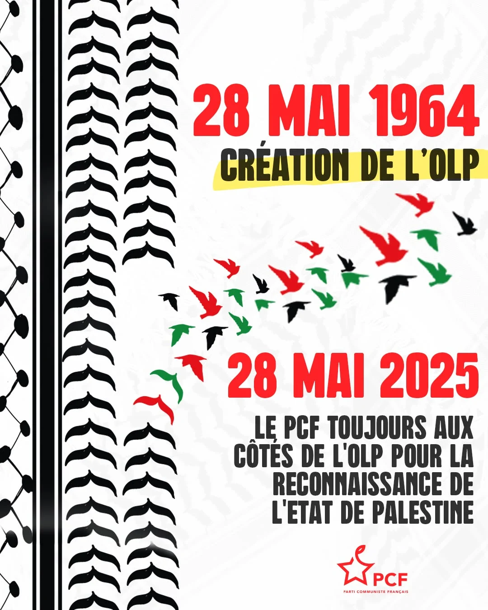

Publication relayée par le PCF 79
Le PCF marque le 61e anniversaire de la création de l’OLP
Date de mise à jour indiquée par Facebook · 29 mai 2025
Texte de la publication · PCF national
Il y a 61 ans, l’OLP voyait le jour.
Un cri de liberté et d'espoir lancé depuis la Palestine, repris aux quatre coins du monde par celles et ceux qui refusent l’oubli, l’occupation, le silence complice.
Le 4 juin, le PCF aux côtés de l'OLP lancera l'Alliance internationale pour les droits des Palestiniens, en présence de nombreuses personnalités palestiniennes, françaises et européennes pour porter haut l'exigence de reconnaissance de l’État de Palestine.
Parce que le droit des peuples à disposer d’eux-mêmes est un principe intangible.
Parce que la paix passe par la justice.
La France doit reconnaître l'Etat de Palestine
#palestine #OLP #PCF #4juin #solidaritéinternationale #ReconnaissancePalestine

Sources
PCF national · publication relayée par le PCF 79 · bibliothèque Facebook · AR-0002-FB-01110
À lire aussi · Journée internationale de la paix. Le texte national dans le relevé